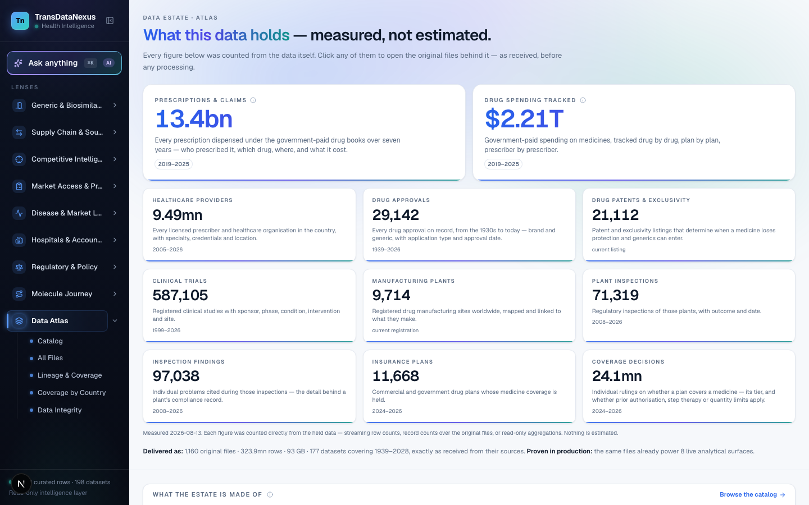
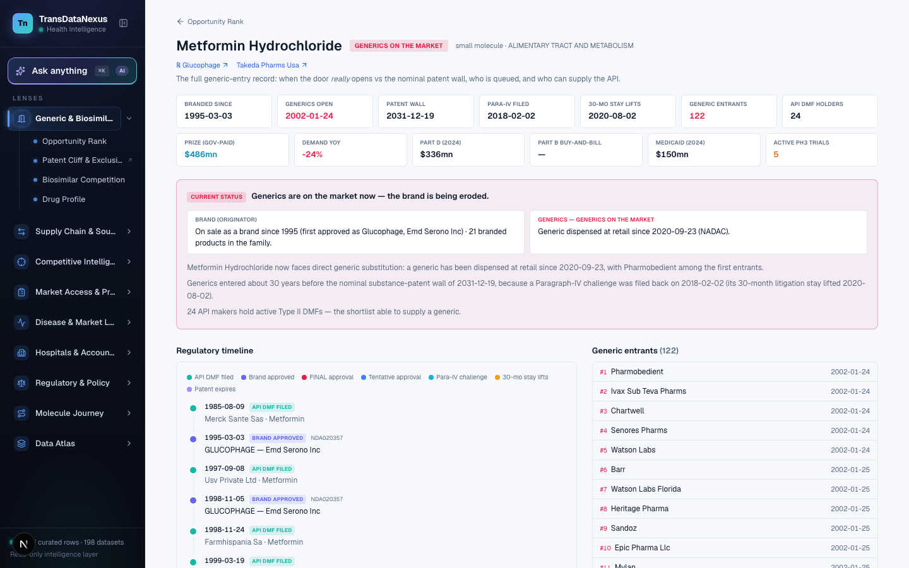
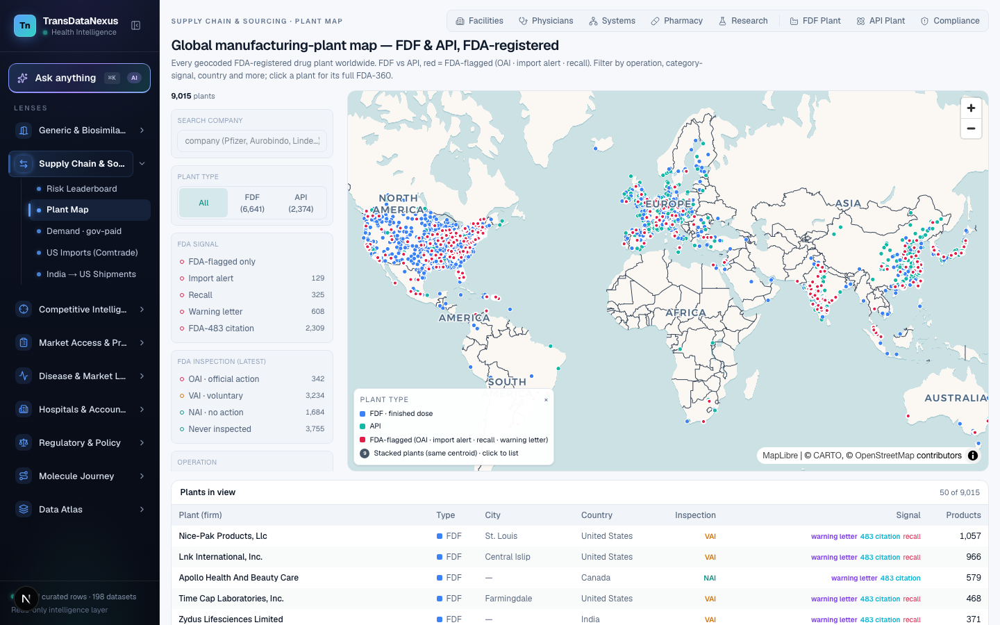
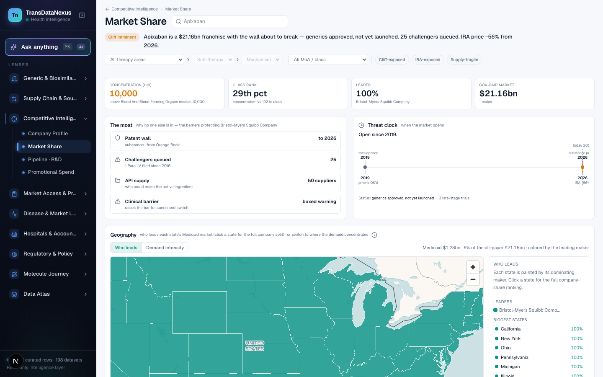
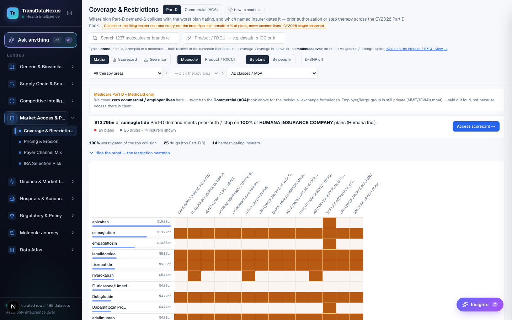
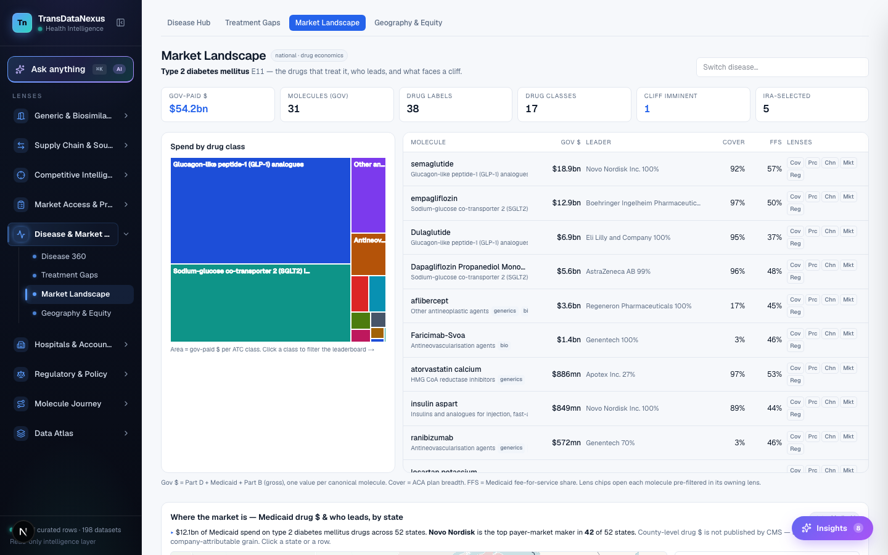
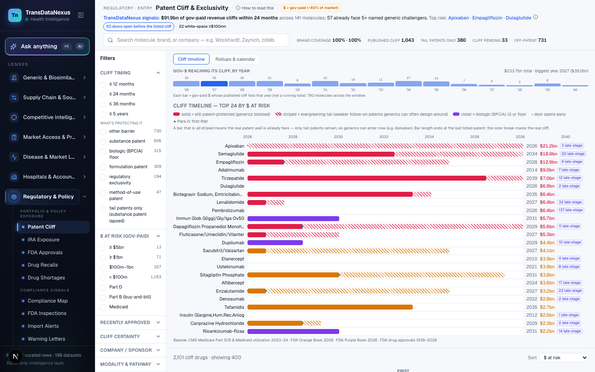
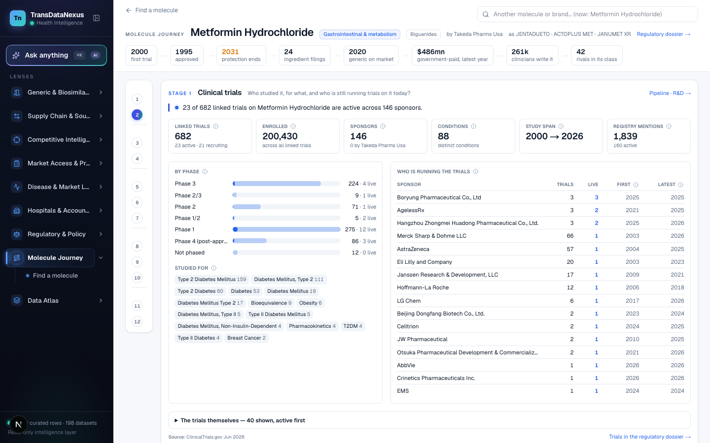

Generic & biosimilar entry
Opportunity rank, patent cliff, biosimilar competition and the drug profile for each molecule.
When does the door open, and who is queued?Product 02 · Healthcare & Pharma
Nine decision lenses, a Data Atlas and the Ask console, all reading the same resolved data. Entry, supply, competition, market access, disease, accounts, regulatory, the molecule journey and trade, each as its own view. A figure in one lens is the same figure in every other.
The mechanism
A lens does not own its data. Every source is resolved to one canonical molecule key first, then each lens reads that resolved layer and arranges it around one question. Change the question, change the lens; the numbers underneath do not move.

Data Atlas. The catalogue behind the lenses: 177 datasets, each with its row count, source, vintage and integrity check.
Nine lenses
Each lens answers one kind of question and holds its own sub-views. Alongside them sit the Data Atlas, which catalogues what the lenses read, and Ask, which answers in plain English from the same data.
Opportunity rank, patent cliff, biosimilar competition and the drug profile for each molecule.
When does the door open, and who is queued?Risk leaderboard, a plant map of 9,015 plants, demand by molecule and the firms cited at inspection.
Who makes it, where, and how exposed is the supply?Company profile, market share, pipeline and promotional spend.
Who holds the market, and how firmly?Coverage and restrictions, channel mix, pricing and IRA selection risk.
How is it paid for, and by whom?Disease 360, treatment gaps, market landscape and geography.
Where are the patients, and where is the spend?Hospitals, physicians, pharmacies, health systems and research sites: 195,886 points on one map.
Who prescribes it, and who dispenses it?Approvals, shortages, recalls, inspections, warning letters and IRA exposure.
What has the regulator said about it, and about its plants?One molecule followed through all twelve data stages, from trials to paid volume.
What does the platform know about this one molecule, end to end?US imports and India shipments for the molecule, joined to the same key as the other eight.
Where does the physical product actually move?On screen
Eight screens from the live platform. Pick a lens to see what it shows.

Generic entry. Metformin: branded since 1995, generics open from 2002, 122 entrants, 24 API DMF holders, with the regulatory timeline underneath.

Plant map. 9,015 manufacturing plants, finished dose and API, with inspection and warning-letter signals on each pin.

Market share. Apixaban: the moat, the threat clock to entry and share by geography, all from paid volume.

Coverage & restrictions. The Part D formulary heatmap: tier, prior authorisation and step therapy by plan, one book at a time.

Disease landscape. Type 2 diabetes: $54.2bn of spend by drug class as a treemap, with the molecules behind each class.

Patent cliff. The top 24 drugs by spend at risk, placed on the year the last patent or exclusivity falls.

Molecule journey. Metformin across all twelve stages, trials through generics, on one page.
Data Atlas. Every dataset the lenses read, with lineage, vintage and integrity checks, counted from the rows.
How it fits together
Registers arrive on different grains: a claim, an approval, a plant, a plan, a shipment. Each is resolved to the molecule key, overlaps are taken at their maximum, a vintage is stamped, and only then does a lens read it.
Data Atlas
The Atlas catalogues every dataset behind the platform: 177 datasets, 323.9mn rows, 1939 to 2026. Each entry carries its source, its lineage and an integrity check. The figures below are counted from the rows, not estimated.
Row counts are taken from the data at build time and shown on the Atlas beside each dataset. Sources are disclosed on the platform, one dataset at a time.
Ask · NLQ
The Ask console sits on the same spine as the lenses. Type a question in plain English. The service finds the right tables, writes and checks the SQL, runs it read-only and verifies every headline number against the rows before it answers.
Send one molecule or one product. We will walk you through what the platform already knows about it, on the live system.